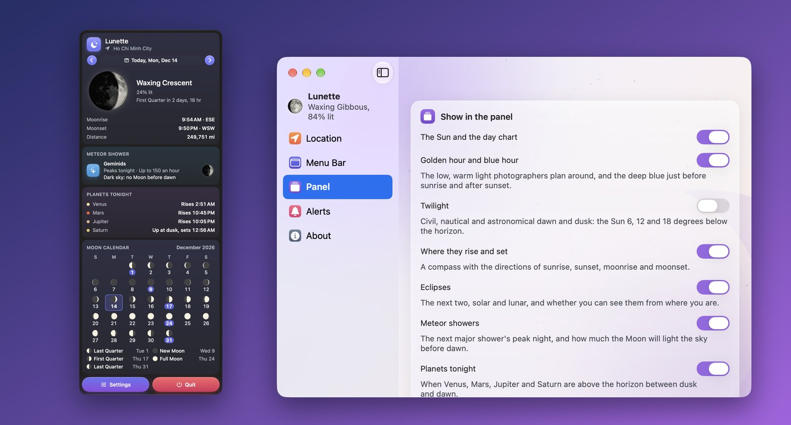

Lunette
月亮與太陽，在選單列裡，也在你的口袋裡。
本頁面為互動效果模擬。在 Mac 選單列與 iOS 小工具中，Lunette 完全離線進行毫秒級天體歷算。

它能做什麼
在 Mac 上，Lunette 依真實的月相把今晚的月亮畫在選單列裡，旁邊是下一次日出或日落的時間；按一下，當天的整片天空就會展開。在 iPhone、iPad 和 Android 上，同樣的天空填滿整個 App，小工具還會把月亮帶到你的主畫面上。
- 今晚月亮的模樣：月相、被照亮的比例、離地球多遠，以及在你所在的地方何時升起、何時落下。
- 一眼看清一天：一張太陽在地平線上方運行軌跡的圖表，依天空的狀態上色——夜晚、曙暮光、藍調時刻、黃金時刻、白天——月亮的路徑以點線疊在上面。
- 日出、日落和白晝長度，以及比昨天長了或短了多少。
- 黃金時刻和藍調時刻，早晚各一次，為拍照的人準備。如果需要，還有民用、航海和天文曙暮光。
- 接下來的四個月相：上弦月、滿月、下弦月和新月，精確到分鐘。
- 日月食：接下來的日食和月食，以及從你所在之處能不能看見。
- 任何一天：逐日翻看或選一個日期來規劃某個夜晚，並在月曆中看整個月的月亮。
- 流星雨和行星：下一場流星雨的極大期之夜和當晚天空會有多暗，以及金星、火星、木星和土星今晚何時在天上。
- 指南針和提醒：太陽和月亮從哪裡升起、在哪裡落下，以及滿月、新月、黃金時刻、日出、日落、月出或你看得見的日月食的通知。
- 小工具：月亮和當天的天空，出現在 Mac 桌面、手機或平板的主畫面上，以及 iPhone 的鎖定畫面上。
需要 macOS 14 Sonoma 或以上版本、iOS 或 iPadOS 17 或以上版本，或 Android 8.0 或以上版本。在 App Store 購買一次即可用於 Mac、iPhone 和 iPad；Android 版請從 Google Play 取得。
在你的裝置上算出
每個數字都來自天文學家公開的公式，根據日期和你的位置在你自己的 Mac、iPhone、iPad 或 Android 裝置上計算。背後沒有任何天氣服務，不需要下載，也不會過時；時間與 US Naval Observatory 的曆書相差不超過一兩分鐘。
從赤道以南看，月亮是上下顛倒的，亮面也在另一側。Lunette 會依你所在之處看到的樣子來畫它。
臃腫天氣網頁與 Lunette 的對比
精準算透日月軌跡，無任何廣告插播，絕不額外耗損電池電量。
| 維度 | 傳統天氣網站與應用程式 | Lunette |
|---|---|---|
| 選單列直觀一瞥 | 必須打開瀏覽器、在滿版廣告彈窗中費力尋找 | 選單列原生圖示直接繪出今晚月亮的真實盈虧輪廓 |
| 暮色與黃金時刻 | 僅提供簡單粗略的日出與日落時間 | 細分民用、航海、天文三段晨昏蒙影與攝影黃金時刻 |
| 天象大事記 | 需要手動搜尋專業的天文觀測年曆 | 內建流星雨極大期、日月食、行星合相與最佳觀測時間 |
| 歷算引擎 | 依賴網路 API 粗略估算城市均值 | 完全在設備本機運作的高精度高階天文學星曆演算法 |
| 隱私與輕快 | 背景常駐採集 GPS 定位軌跡並載入廣告 | 100% 離線運算，無網路請求，零追蹤，瞬間秒開 |
一段話說清隱私
Lunette 請求你的位置，只是為了計算你所在之處的日出、日落和月出。它把位置四捨五入到大約一公里，儲存在你的裝置上，也沒有任何網路存取權限可以把它傳送出去。沒有帳號，沒有分析，沒有追蹤。如果你完全不想分享位置，Lunette 會改用你所在時區的主要城市，通常只差幾分鐘。完整的隱私權政策有更詳細的說明，內容與此一致。
同一開發者的更多 App
小巧的 App，每一款都專心做好一件事。無需帳號，沒有廣告，也沒有一款會追蹤你。
 Statuette在選單列查看 CPU、記憶體、磁碟和網路。Mac
Statuette在選單列查看 CPU、記憶體、磁碟和網路。Mac Tockette從選單列輕輕一拖，計時器就開始了。Mac
Tockette從選單列輕輕一拖，計時器就開始了。Mac Zonette你在意的每個時區，按一下就能看到。MaciPhone 和 iPadAndroid
Zonette你在意的每個時區，按一下就能看到。MaciPhone 和 iPadAndroid Lunarette四種傳統的農曆。MaciPhone 和 iPadAndroid
Lunarette四種傳統的農曆。MaciPhone 和 iPadAndroid Pausette為眼睛和腰背安排溫和的休息。Mac
Pausette為眼睛和腰背安排溫和的休息。Mac Poisette坐直身子，由你戴著的 AirPods 提醒。MaciPhone 和 iPad
Poisette坐直身子，由你戴著的 AirPods 提醒。MaciPhone 和 iPad Hushette寧靜的環境音，從不循環重複。MaciPhone 和 iPadAndroid
Hushette寧靜的環境音，從不循環重複。MaciPhone 和 iPadAndroid Tapsody打字時發出機械鍵盤的聲音。Mac
Tapsody打字時發出機械鍵盤的聲音。Mac Thrumline你的心率，即時顯示在選單列。Mac
Thrumline你的心率，即時顯示在選單列。Mac Nightjar讓 Mac 保持喚醒。實實在在。Mac
Nightjar讓 Mac 保持喚醒。實實在在。Mac Umbrette調暗一切，只留下你正在工作的視窗。Mac
Umbrette調暗一切，只留下你正在工作的視窗。Mac Prompette就在相機下方的提詞機。MaciPhone 和 iPadAndroid
Prompette就在相機下方的提詞機。MaciPhone 和 iPadAndroid Tallette為你的算帳準備的一卷紙帶。MaciPhone 和 iPadAndroid
Tallette為你的算帳準備的一卷紙帶。MaciPhone 和 iPadAndroid Probette媒體檔案的所有技術細節，用淺白的話說清楚。MaciPhone 和 iPadAndroid
Probette媒體檔案的所有技術細節，用淺白的話說清楚。MaciPhone 和 iPadAndroid Bindette把音訊檔案合成一本像樣的有聲書。MaciPhone 和 iPadAndroid
Bindette把音訊檔案合成一本像樣的有聲書。MaciPhone 和 iPadAndroid Lettrette按寄出時的原樣打開 winmail.dat 和 .msg 檔案。MaciPhone 和 iPad
Lettrette按寄出時的原樣打開 winmail.dat 和 .msg 檔案。MaciPhone 和 iPad Nhanh Tay把四個答案排好順序。要快。MaciPhone 和 iPadAndroid
Nhanh Tay把四個答案排好順序。要快。MaciPhone 和 iPadAndroid Pinette讓便條一直在你眼前。MaciPhone 和 iPadAndroid
Pinette讓便條一直在你眼前。MaciPhone 和 iPadAndroid Usagette在選單列查看 Claude 用量上限。Mac
Usagette在選單列查看 Claude 用量上限。Mac Squiggo和友善的小夥伴一起畫畫。MaciPhone 和 iPadAndroid
Squiggo和友善的小夥伴一起畫畫。MaciPhone 和 iPadAndroid Foreman給師傅的工作、報價與發票。MaciPhone 和 iPadAndroid
Foreman給師傅的工作、報價與發票。MaciPhone 和 iPadAndroid Tilewake畫面會甦醒的滑塊拼圖。MaciPhone 和 iPadAndroid
Tilewake畫面會甦醒的滑塊拼圖。MaciPhone 和 iPadAndroid Chăm luyện越南語小學練習，題目都會朗讀。MaciPhone 和 iPadAndroid
Chăm luyện越南語小學練習，題目都會朗讀。MaciPhone 和 iPadAndroid